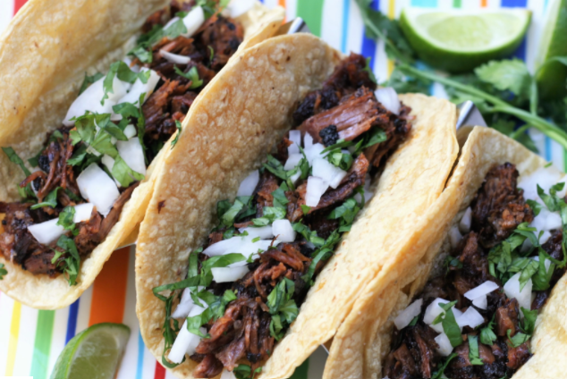

~Hispanic Cuisine~
Birria de Res Tacos (Beef Birria Tacos)
Prep time: 15 Minutes
Cook: 3 Hours 40 Minutes
Additional: 30 Minutes
Total: 4 Hours 25 Minutes
Total Servings: 6 servings- 18 Tacos
Per serving: 739 calories; protein 44.1g; carbohydrates 55.1g;
fat 37g; cholesterol 137.5mg; sodium 165.7mg.
See
Inspiration
Ingredients:
Procedure:
- Step 1: Fill a pot with water and bring to a boil. Add guajillo, ancho,
and arbol chile peppers; boil for 5 minutes. Remove pot from heat and allow peppers
to soak until cool. Drain, reserving 1/4 cup of the water. - Step 2:Preheat the oven to 325 degrees F (165 degrees C).
- Step 3:Rinse meat and pat dry with paper towels. Season with salt and pepper.
- Step 4:Heat oil in a Dutch oven over medium-high heat. Add meat and cook until
browned on all sides, about 10 minutes. Remove from heat. - Step 5:Line a heavy cast-iron grill pan or griddle with aluminum foil and place
over high heat. Arrange tomatoes in a single layer on top. Grill until tomato skin
is burned on all sides and begins to peel, 3 to 5 minutes. - Step 6:Combine soaked chile peppers, cooked tomatoes, vinegar, garlic,
2 teaspoons black pepper, cloves, cinnamon, cumin, thyme, marjoram, oregano, and salt
to taste in a blender. Pour in reserved 1/4 cup of chile water; blend until smooth. - Step 7:Strain chile sauce through a mesh strainer and pour over the browned meat
in the Dutch oven, turning roast so it is completely covered with sauce. Cover the Dutch
oven and place in the preheated oven. - Step 8:Bake, basting meat every 45 minutes with the sauce, until birria begins to fall
apart, 3 to 4 hours. Remove lid and bake uncovered until birria is crispy on top, about 20 minutes.
Remove from oven, cover with 2 layers of aluminum foil, and allow to rest in a warm area for 10 minutes. - Step 9:Line a heavy cast-iron grill pan or griddle with aluminum foil and place
over high heat. Arrange tomatoes in a single layer on top. Grill until tomato skin
is burned on all sides and begins to peel, 3 to 5 minutes.